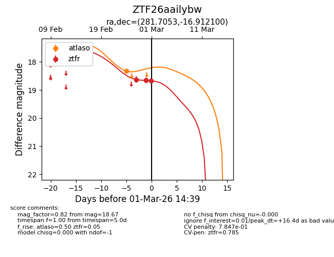
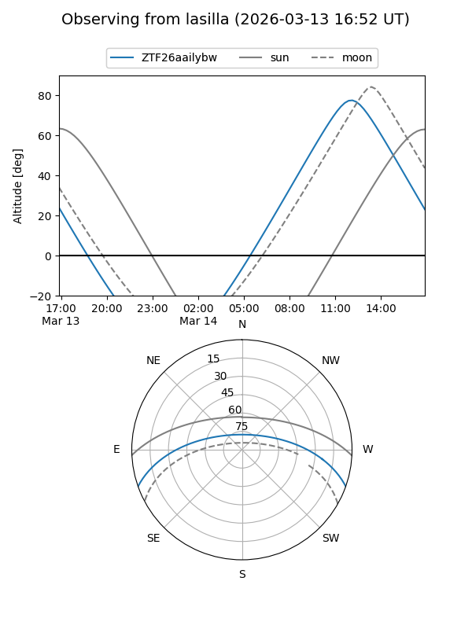
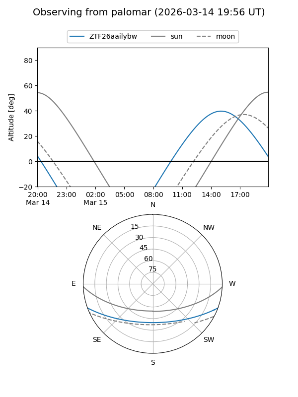
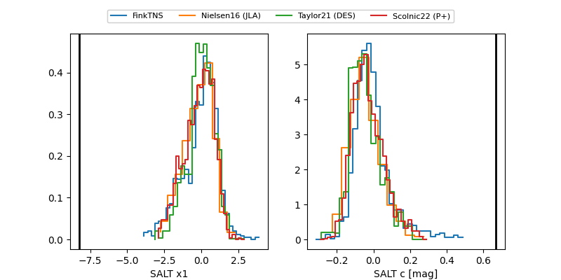

ZTF26aailybw
Target ZTF26aailybw at 2026-03-01 14:40
Aliases and brokers:
FINK: link
Lasair: link
ALeRCE: link
alt names
ZTF26aailybw (ztf,fink_ztf)
Coordinates:
equatorial (ra, dec) = 281.7053,-16.91210
equatorial (HMS+DMS) = 18:46:49.27,-16:54:43.56
galactic (l, b) = (17.2979,-6.63224)
Flags:
likely cv
Photometry:
last atlaso=18.32, ztfr=18.67
1 atlaso, 3 ztfr detections
Lightcurve

Visibility


Additional plots
